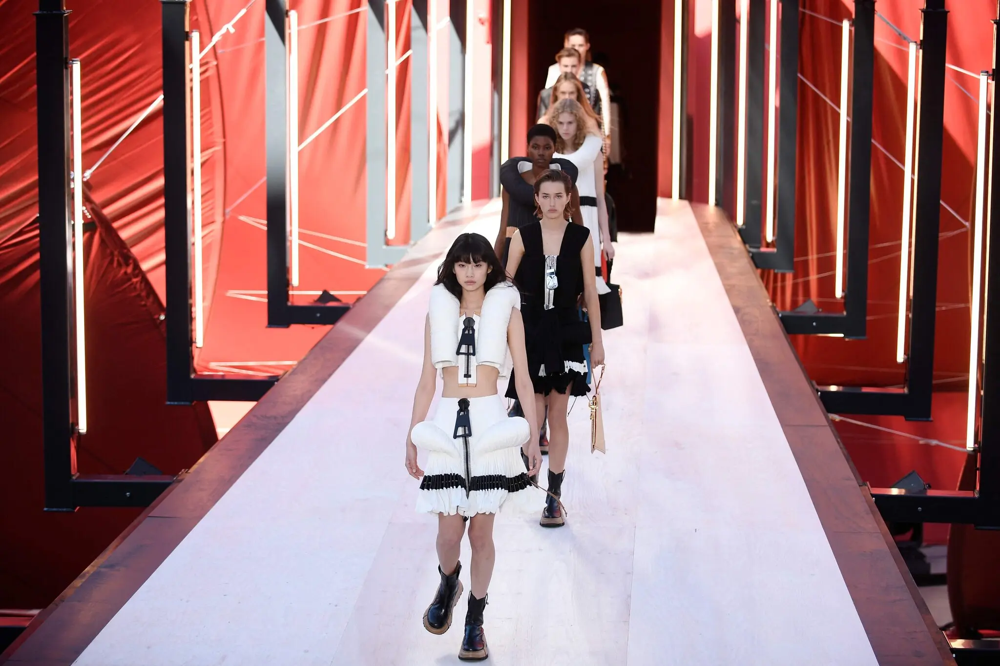
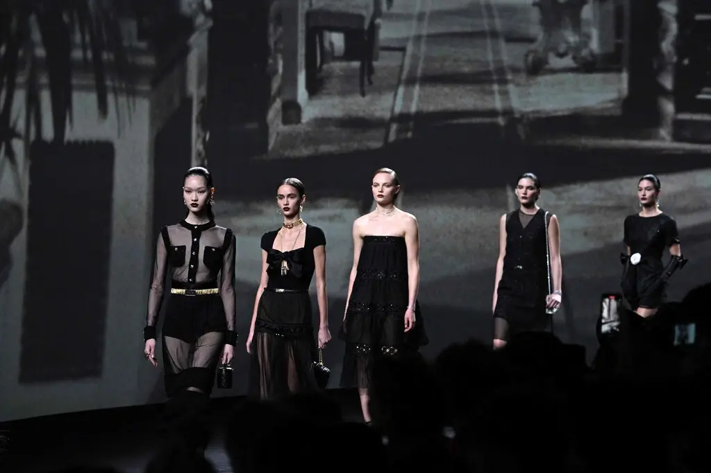
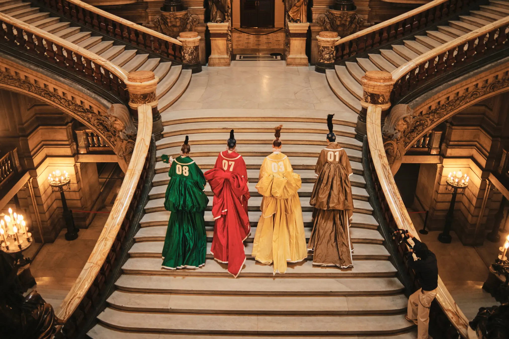

Sex, Nostalgia and Code-Switching
Read the original news here
PARIS — “Change the history” read the poster on every seat at the Stella McCartney show in the Piazza of the Centre Pompidou. Jerry and Jessica Seinfeld were schmoozing with Jeff Koons in the early morning air. The Paris shows were finally drawing to a close, and the quote — from Yoshimoto Nara, the Japanese artist known for his portraits of wide-eyed, grumpy girls, whose work in part inspired the show — felt like an epitaph for the whole entire season. It has been dripping in nostalgia since Fendi kicked it off in New York with a celebration of 1997 and the birth of its Baguette bag.
Also sex, or versions of “sexy” — which is striking given the fact the largely women’s wear collections have coincided, pretty closely, with a period in which women’s rights are increasingly under threat. Otherwise there hasn’t been much reconsideration of the role that fashion plays in bolstering and conveying female strength on the runways.
An exception was Miuccia Prada, who combined the two with her no-nonsense Miu Miu show, tripling down on the set that went viral two seasons ago — the very-cropped top and matching low-slung bottom — and helped fast-forward the slide toward Y2K revivalism and exposed midriffs that has been ubiquitous over the past four weeks.
This time, though, she dosed it with a focus on the functional: wide utility belts with pockets (into which you could cram a tote bag’s worth of stuff) seemingly Velcro’ed together at the back and doubling in a pinch as ultra-minis, reclaiming the whole belt-as-skirt thing. They came layered over boys’ white cotton boxers with the waistbands showing, a move on from last season’s lingerie underpinnings, and paired with matching bra tops, often in tough-look distressed denim or leather with matchy-matchy jackets and coats as cover-ups. Mixed in was a series of stretchy layered undershirts the color of old clay, worn three at a time or decorated with a smattering of rhinestones, and some sparkly, transparent knits.
Detachable belts also popped up at Sacai, where Chitose Abe reined in her tendencies to overcomplicate her signature hybrid garments by focusing on pleats, to great effect. Pleats piled from the sleeves of tracksuits gave a bit of a flare to the bottom of skinny pants and added a graceful A-line to otherwise tailored jackets.
With them all were the belts, rendered in trench-coat material, with big puffy pockets at the sides that nodded to panniers (another bit of historicism that fashion, oddly, can’t shake; see Lanvin’s cocktail frocks) but also practicality. Strap ‘em on, strap ‘em off, depending on how much you have to carry. No handbag required.
Reuse, Revise, Revisit
Still, for the most part, the system seems to have slipped back to before times, with look-at-me runway stunts, Instagram-me celebrities and crowds jammed inside — and out, where fans shriek desperately for the latest K-pop stars, the must-have front row stars of the moment.
Designers are excavating their own past for inspiration. Well, who wouldn’t love a chance to go back and do it again, but better? Revisionism is one of the great promises of fashion. At least if you do it well.
Ms. McCartney did (hence that Nara quote), revisiting the hits that made her name back around the turn of the millennium — the hipster Savile Row trousers, oversize jackets, chain link … well, blouses in name only — in the primary colors of the museum setting, and with the sort of refreshing assurance that comes over time.
But while the opening film at Chanel, starring Kristen Stewart meditating on the evolution of identity, seemed to be touching on the same idea — we should “burn down the very best yesterdays so you can start again,” the actor mused, perhaps suggesting the designer Virginie Viard’s struggle with the legacy of Coco as well as Karl Lagerfeld, and attempts to make a brand with a heavy heritage her own — the result was less convincing.
Athletic, Bermuda, bouclé, black tie, gingham, frumpy, tap, you name it, Ms. Viard made it into a short. Often paired with a classic jacket and a pair of fishnet rhinestone knee or ankle socks. All of which looked less like a meaningful revision of inherited codes than a somewhat transparent bid for the youth vote. The size diversity on the runway, on the other hand, was an actual step forward.
Reinvent
At least at Thom Browne, returning to Paris after two years to demonstrate, once again, that the tools of American prepster life past belonged in the ornate setting of the Opéra Garnier, the reinvention of a familiar story was given a somewhat unexpected cast and a moral ending.
Which took the form of a campy, baroque retelling of Cinderella in four acts, starring Gwendoline (“Game of Thrones”) Christie, MJ (“Pose”) Rodriguez, a whole lot of Oxford cloth, and the promise “everyone fits in the shoe.” In Mr. Browne’s world, all heroines can go to the suburban high school prom.
And they can do it in technicolor taffeta varsity jackets-turned-opera cloaks, later shucked to reveal suiting covered in polka dots, with skirts and trousers dropped down to hint at the Y-fronts beneath, all of it in a symphony of Jordan almond shades. Also frock coats, corsets and extreme poodle skirts (the poodle transformed into Mr. Browne’s dachshund, Hector), as well as punky dance frocks and pleated minis.
In the end, “You’re the One That I Want” from “Grease” hit the soundtrack, and Cinderella and her Prince reappeared and started to boogie (along with the models). Then a pink Cadillac arrived, instead of a pumpkin. It was impossible not to smile.
As it was at the futuristic funfair created by the French artist Philippe Parreno for Louis Vuitton and the designer Nicolas Ghesquière: a set in the shape of a gargantuan red flower plucked from another planet and set down in the center of the Cour Carrée of the Louvre, complete with moving carnival lights and stamens shooting up into the sky (well, it is Paris). Out came the models (plus the Vuitton ambassador HoYeon Jung) from the heart of the bloom, in garments featuring equally supersize handbag hardware.
One egg-shaped tweed coat had an enormous zipper dangling just beneath the chin, like a jabot. Giant buckles doubled as corset belts over floral trousers. Trompe l’oeil shoulder straps traced a road map on leather suiting and actual straps were woven through the hems of leather halter dresses. The gold padlocks that decorate every LV bag doubled as the links on an apron dress.
Such irreverent details didn’t exactly change the history, but they did play with it; offering a bit of fashion code-switching, finally, of a particularly apropos kind.